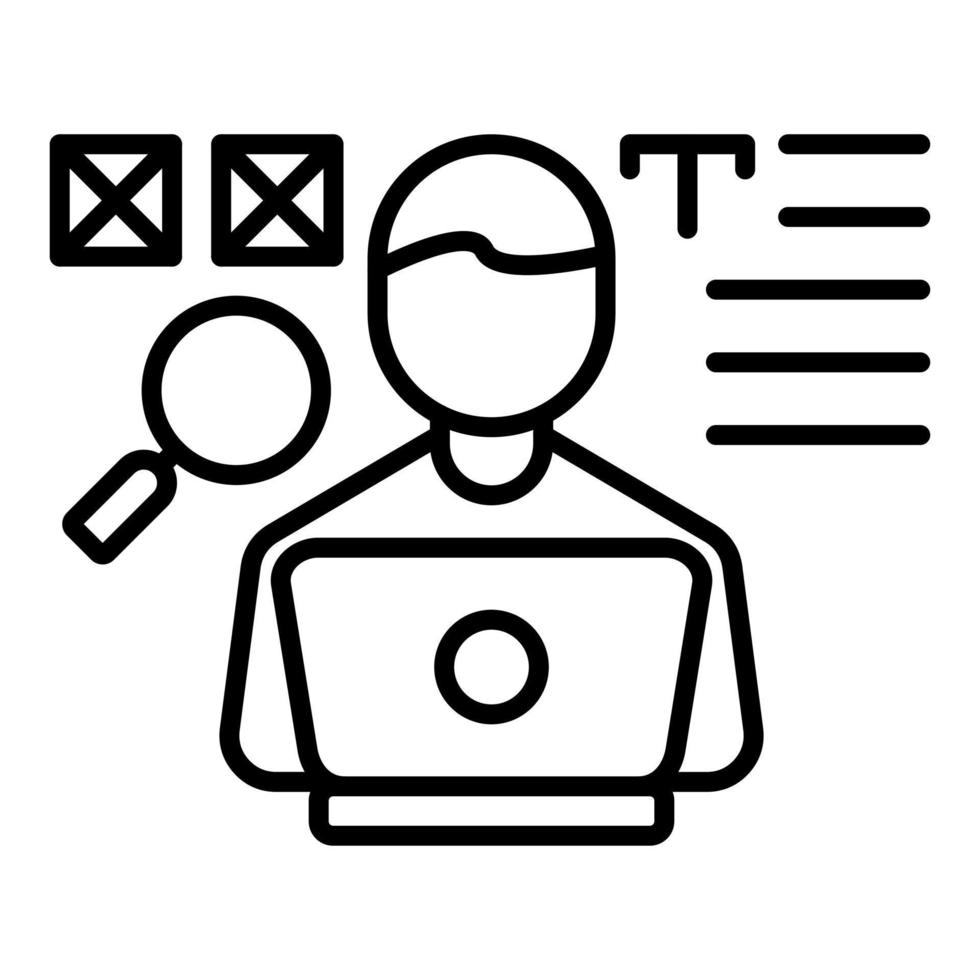

Experiência Profissional

Aprendiz em Desenvolvimento de Software QA
EzeSistemas- Desenvolvimento em PHP utilizando arquitetura MVC
- Manipulação e manutenção de dados com MySQL (PhpMyAdmin)
- Ajustes e interações no front-end com JavaScript
- Contato com C# utilizando ASP.NET Core MVC
- Execução de testes manuais para validação de funcionalidades
- Conferência de regras de negócio e apoio em testes de regressão
- Identificação e reporte de falhas durante correções no sistema